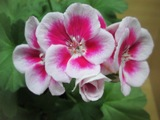
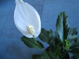
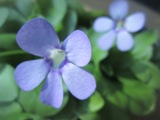
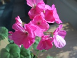
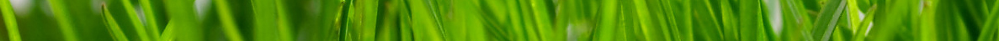

|




|
Растения заводят для украшения интерьера, освежения, очищения воздуха в помещении и в качестве альтернативы живым питомцам, ведь некоторые ухаживают за растениями как за детьми. Без цветочков в горшках, мини кустарников, экзотических пальм, орхидей, контейнеров с летними цветущими саженцами на балконах, согласитесь, наша жизнь была бы в разы скучнее и серее? Кроме того, что цветы дома — это красиво, мило, есть и другой аспект — статусный — дорогие, оригинальные растения в больших домах, квартирах, коттеджах — очень облагораживают, стилизуют, удорожают интерьер. |
|  |